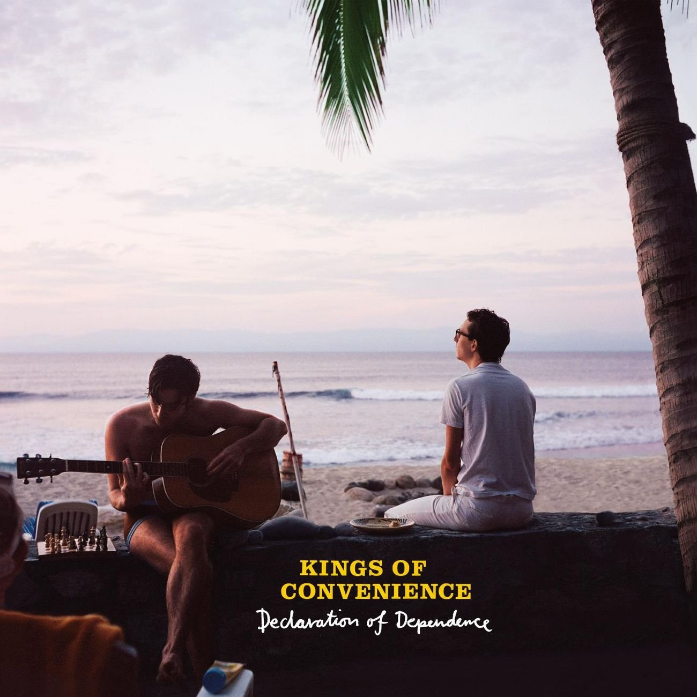
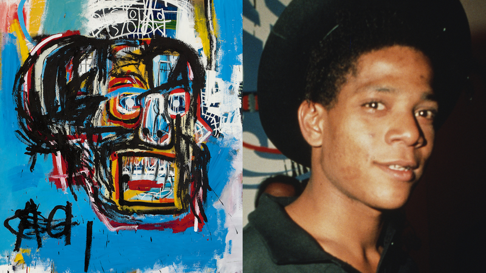

My Favorite Musician: Kings of convenience
An indie pop duo from Bergen, Norway, Kings of Convenience's gentle, harmony-rich songs recall the bittersweet comfort of forerunners like Simon & Garfunkel and Belle and Sebastian. After debuting in 2000 with the acoustic Kings of Convenience album, they topped the Norwegian album chart with the next year's Quiet Is the New Loud. The pair experimented with more-expansive arrangements over time while retaining a hushed demeanor on albums like 2004's Riot on an Empty Street, a Norwegian number two hit that cracked the Billboard Independent Albums chart in the U.S. After making their Billboard 200 debut with 2009's Declaration of Dependence, they took an extended publishing hiatus before returning in 2021 with Peace or Love.
My Favorite Artist: Jean-Michel Basquiat (American artist)
Jean-Michel Basquiat, (born December 22, 1960, Brooklyn, New York, U.S.—died August 12, 1988, New York City), American painter known for his raw gestural style of painting with graffiti-like images and scrawled text.
More details...
Jean-Michel Basquiat is best-known as the street-smart graffiti artist who rose from New York’s punk scene. He gained notoriety during the late 1970s as part of the graffiti duo known as SAMO, which combined elements of the hip-hop, punk, and street art movements in Downtown Manhattan. Less than a decade later, his neo-expressionist pieces were being exhibited in galleries and museums around the world. Basquiat’s paintings incorporated elements of poetry and other forms of writing, as his works often married images with text. With this style, he produced moving social commentary and critique on politics, racism, class struggle, and more.